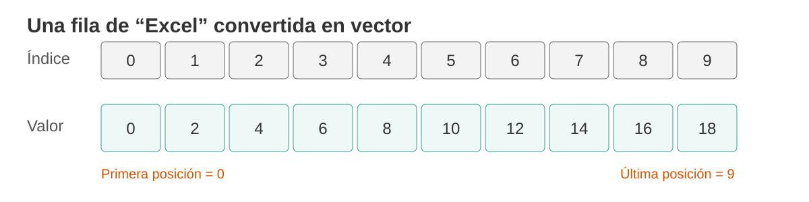
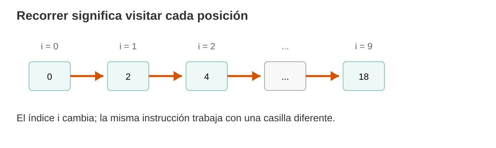
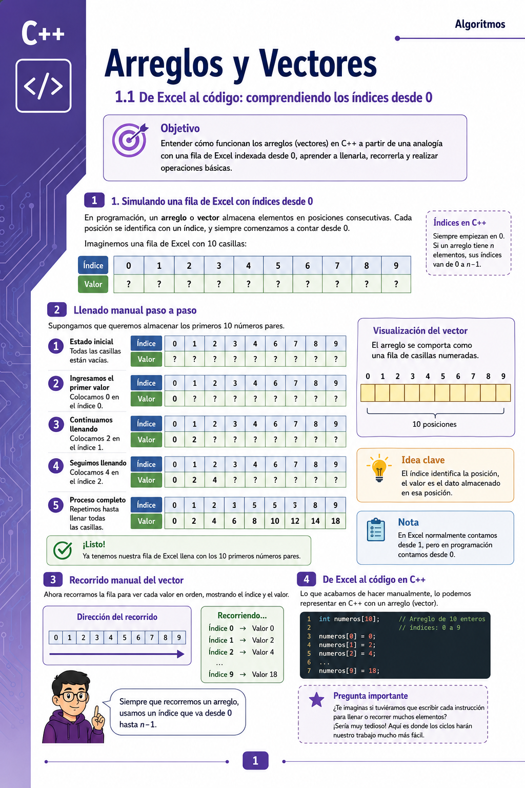

10 Arreglos y vectores: muchas casillas, una sola estructura
De una fila de Excel al recorrido de datos en C++
11 El reto de hoy
Hasta ahora hemos trabajado con variables individuales:
int nota1;
int nota2;
int nota3;Esto funciona cuando tenemos pocos datos.
Pero imaginemos que necesitamos guardar las notas de 10, 50 o 100 estudiantes.
¿Tendría sentido crear manualmente nota1, nota2, nota3… hasta nota100?
Hoy aprenderemos una forma diferente de organizar muchos datos del mismo tipo: los arreglos o vectores.
12 1. Antes de programar: imaginemos una fila de Excel
Pensemos en una fila formada por 10 casillas.
Pero haremos algo especial: en lugar de numerarlas del 1 al 10, las numeraremos como lo hace un arreglo en programación:
0, 1, 2, 3, 4, 5, 6, 7, 8 y 9.

Si tenemos 10 casillas, la primera posición es 0 y la última es 9.
En general, si un arreglo tiene n elementos, sus posiciones van:
0, 1, 2, ..., n - 113 2. Dos conceptos que no debemos confundir
En cada casilla existen dos cosas diferentes:
- Índice: indica dónde está la casilla.
- Valor: es el dato almacenado dentro de esa casilla.
Por ejemplo:
| Índice | 0 | 1 | 2 | 3 | 4 |
|---|---|---|---|---|---|
| Valor | 15 | 20 | 8 | 12 | 30 |
Entonces:
- en la posición
0está almacenado15; - en la posición
1está almacenado20; - en la posición
4está almacenado30.
Si quiero obtener el valor 12, ¿qué posición debo visitar?
La respuesta es la posición 3, aunque visualmente sea la cuarta casilla.
14 3. Llenemos las casillas manualmente
Supongamos que queremos almacenar los primeros diez números pares.
Al inicio tenemos:
| Índice | 0 | 1 | 2 | 3 | 4 | 5 | 6 | 7 | 8 | 9 |
|---|---|---|---|---|---|---|---|---|---|---|
| Valor | ? | ? | ? | ? | ? | ? | ? | ? | ? | ? |
Ahora llenemos una casilla a la vez:
| Paso | Índice visitado | Valor que colocamos |
|---|---|---|
| 1 | 0 | 0 |
| 2 | 1 | 2 |
| 3 | 2 | 4 |
| 4 | 3 | 6 |
| 5 | 4 | 8 |
| 6 | 5 | 10 |
| 7 | 6 | 12 |
| 8 | 7 | 14 |
| 9 | 8 | 16 |
| 10 | 9 | 18 |
Al terminar:
| Índice | 0 | 1 | 2 | 3 | 4 | 5 | 6 | 7 | 8 | 9 |
|---|---|---|---|---|---|---|---|---|---|---|
| Valor | 0 | 2 | 4 | 6 | 8 | 10 | 12 | 14 | 16 | 18 |
15 4. Ahora recorramos la fila manualmente
Recorrer un arreglo significa visitar sus posiciones una por una.

Podríamos describir el proceso así:
Visitar posición 0
Mostrar su valor
Visitar posición 1
Mostrar su valor
Visitar posición 2
Mostrar su valor
...
Visitar posición 9
Mostrar su valorLa acción siempre es la misma.
Lo único que cambia es la posición que estamos visitando.
Eso debería recordarnos algo que ya conocemos: los ciclos.
16 5. De las casillas de Excel a un arreglo en C++
En C++ podemos representar nuestras diez casillas así:
int numeros[10];Leamos esta instrucción:
Cree una estructura llamada
numeroscapaz de almacenar 10 valores enteros.
Las posiciones disponibles serán:
numeros[0]
numeros[1]
numeros[2]
numeros[3]
numeros[4]
numeros[5]
numeros[6]
numeros[7]
numeros[8]
numeros[9]numeros[10] no es una posición válida en un arreglo de 10 elementos.
El 10 utilizado al declarar el arreglo representa su cantidad de elementos; sus índices válidos son de 0 a 9.
17 6. Hagamos exactamente lo mismo que hicimos a mano
Podemos llenar el arreglo manualmente:
numeros[0] = 0;
numeros[1] = 2;
numeros[2] = 4;
numeros[3] = 6;
numeros[4] = 8;
numeros[5] = 10;
numeros[6] = 12;
numeros[7] = 14;
numeros[8] = 16;
numeros[9] = 18;Y también podemos mostrarlo manualmente:
cout << numeros[0] << endl;
cout << numeros[1] << endl;
cout << numeros[2] << endl;
cout << numeros[3] << endl;
cout << numeros[4] << endl;
cout << numeros[5] << endl;
cout << numeros[6] << endl;
cout << numeros[7] << endl;
cout << numeros[8] << endl;
cout << numeros[9] << endl;El arreglo ya resolvió un problema: no necesitamos crear diez variables con nombres diferentes.
Pero todavía estamos repitiendo muchas instrucciones.
¿Qué estructura conocemos para repetir?
18 7. Aparece el ciclo for
Podemos utilizar una variable i para representar la posición actual:
for (int i = 0; i < 10; i++) {
cout << numeros[i] << endl;
}Analicemos:
| Parte | Significado |
|---|---|
int i = 0 |
comenzamos en la primera posición |
i < 10 |
continuamos mientras exista una posición válida |
i++ |
avanzamos a la siguiente posición |
numeros[i] |
accedemos al elemento que corresponde al índice actual |
18.1 La conexión importante
El ciclo for no está haciendo algo mágico.
Está automatizando exactamente el recorrido que primero hicimos manualmente.
19 8. Ahora llenemos el arreglo con un ciclo
En lugar de escribir diez asignaciones:
for (int i = 0; i < 10; i++) {
numeros[i] = i * 2;
}Observemos algunas vueltas:
i |
Expresión i * 2 |
Casilla modificada |
|---|---|---|
| 0 | 0 | numeros[0] |
| 1 | 2 | numeros[1] |
| 2 | 4 | numeros[2] |
| 3 | 6 | numeros[3] |
| … | … | … |
| 9 | 18 | numeros[9] |
20 9. Nuestro primer programa completo
#include <iostream>
using namespace std;
int main() {
int numeros[10];
// Llenamos el arreglo
for (int i = 0; i < 10; i++) {
numeros[i] = i * 2;
}
// Recorremos y mostramos el arreglo
for (int i = 0; i < 10; i++) {
cout << "Posicion " << i
<< " = " << numeros[i] << endl;
}
return 0;
}21 10. Ahora que los datos los ingrese el usuario
Podemos reutilizar el mismo recorrido:
#include <iostream>
using namespace std;
int main() {
int edades[5];
for (int i = 0; i < 5; i++) {
cout << "Ingrese la edad para la posicion " << i << ": ";
cin >> edades[i];
}
cout << "\nDatos almacenados:" << endl;
for (int i = 0; i < 5; i++) {
cout << "edades[" << i << "] = " << edades[i] << endl;
}
return 0;
}Predigamos:
- ¿Cuál será la primera posición utilizada?
- ¿Cuál será la última?
- ¿Cuántas veces se ejecutará cada
for? - ¿Qué ocurriría si cambiamos
i < 5pori <= 5?
22 11. Hagamos operaciones con todos los elementos
Una vez que sabemos recorrer el arreglo, podemos procesar sus datos.
Por ejemplo, sumarlos:
int suma = 0;
for (int i = 0; i < 5; i++) {
suma = suma + edades[i];
}
cout << "Suma = " << suma << endl;Y calcular el promedio:
double promedio = suma / 5.0;
cout << "Promedio = " << promedio << endl;Aprender arreglos no consiste únicamente en memorizar:
int datos[10];Lo importante es comprender tres acciones:
- crear el arreglo;
- acceder a una posición mediante su índice;
- recorrer sus elementos para leerlos, modificarlos o procesarlos.
23 12. Actividad guiada en clase
Trabajemos primero sin programar.
Tenemos el siguiente vector:
| Índice | 0 | 1 | 2 | 3 | 4 | 5 |
|---|---|---|---|---|---|---|
| Valor | 12 | 7 | 25 | 9 | 18 | 4 |
Respondamos:
- ¿Cuál es el valor de la posición
0? - ¿En qué posición está el valor
25? - ¿Cuál es el último índice válido?
- Si recorremos de izquierda a derecha, ¿en qué orden aparecen los valores?
- ¿Cuál es la suma de todos los elementos?
- ¿Cuál es el mayor valor?
Después escribamos un programa que almacene estos datos y los muestre usando un for.
24 13. Mini reto
Construya un programa que:
- cree un arreglo para almacenar 5 notas;
- solicite las cinco notas al usuario;
- muestre cada nota junto con su índice;
- calcule la suma;
- calcule el promedio.
No busquemos todavía la solución más sofisticada.
El objetivo es dominar la relación:
casilla → índice → valor → recorrido → procesamiento.
25 14. Cierre de la clase
Hoy pasamos de una idea conocida —una fila de casillas— a una estructura fundamental de programación.
Podemos resumirlo así:
Muchas variables relacionadas
↓
Un arreglo
↓
Cada elemento tiene un índice
↓
Los índices comienzan en 0
↓
Un ciclo permite recorrerlos
↓
Podemos leer, modificar y procesar todos los datos25.1 Si comprendimos esto, estamos listos para el laboratorio
En el laboratorio podremos trabajar con problemas donde el arreglo ya no solo almacene datos, sino que tengamos que:
- buscar valores;
- encontrar máximos y mínimos;
- contar elementos que cumplan una condición;
- calcular promedios;
- modificar posiciones;
- combinar arreglos con funciones y procedimientos.
26 15. Para recordar
Un arreglo es un conjunto de elementos del mismo tipo almacenados bajo un mismo nombre y diferenciados por su posición.
Y nuestra regla de oro:
Si hay
nelementos, los índices válidos van de0an - 1.
27 Síntesis visual del capítulo
A continuación se presenta una síntesis visual de los conceptos fundamentales que hemos trabajado sobre arreglos y vectores.

Nota: para los programas de clase en C++, especialmente en windows, puedes colocar:
#include <iostream>
#include <clocale>
using namespace std;
int main() {
setlocale(LC_ALL, "");
cout << "Ingrese la calificación del estudiante:" << endl;
cout << "Número de posición: 0" << endl;
cout << "Promedio académico" << endl;
return 0;
}